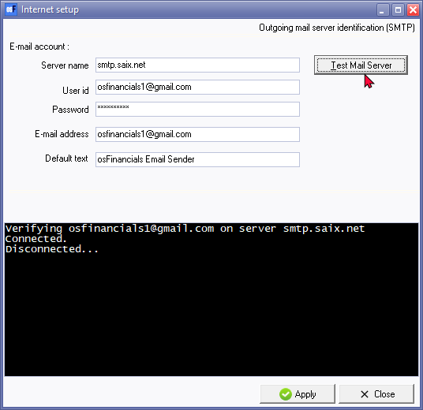

Internet
This option enables you to configure your Internet settings so that you can send reports, statements, and lists to any person or organization via email. To do this, you will need to specify your email's outgoing mail server as set up by your Internet Service Provider on your computer system.
You can also test your email server and view the test log file from this option. It is necessary to perform internet setup in order to send document layout files. If the Internet setup is not completed, an information message will be displayed.
"Internet setup information is incorrect! Run Setup -> Setup -> Internet."
If you wish to:
- Send document layout files form the Documents tab on Debtors form the Documents tab on Creditors (Default ribbon) via email to any person or institution.
- If you have set up any other users on the system, that user's User ID (that is logged on in this Set of Books) and their e-mail address will be displayed on this screen.
|
|
Note this option will only be available to the users that have been granted access privileges for "System Setup" in Setup → Access control (Setup ribbon) but all users, with a valid e-mail address will be able to send reports, lists and documents on the Internet. |

This option allows you to set up your Internet connection in order to send reports, lists and documents to any person or institution by e-mail. You need to specify your e-mail's outgoing mail server, as setup in your e-mail account on your computer system by your Internet Service Provider (ISP).
You need to then test your E-mail server, and view the test log file from this option, before you can send any reports, lists and documents via e-mail. The test to your e-mail server must be successful before this option will work.
To configure the Internet:
- On the Setup ribbon, select Setup → Internet.

- Enter your E-mail account's outgoing mail server's identification as provided by your Internet Service Provider (with whom you already have an account).
- Enter your User ID and a valid Password as provided by your Internet Service Provider (with whom you already have an account).
- Default Text is displayed in the "Subject" field on the "Sending E-mail and Fax Report" screen. This Sending E-mail and Fax Report" screen, is launched if you click on the Print button when the Send report to E-mail or Fax option is selected. You may over type this with your own text (subject), if necessary.
- Click on the Test Mail Server button. This will test your e-mail connection. If successful, a similar result would be displayed:
"Verifying osfinancials1@gmail.com on server smtp.saix.net
Connected.
Disconnected..."
- View the results of your settings for the e-mail server. If your e-mail server is set correctly, a similar result should be displayed:
"Test Finished. Success ."
- Once the test is finished, a confirmation e-mail is sent to the Inbox of your system's default e-mail program.
- Click on the Apply button.
- Click on the Close button to close this screen.
|
|
|